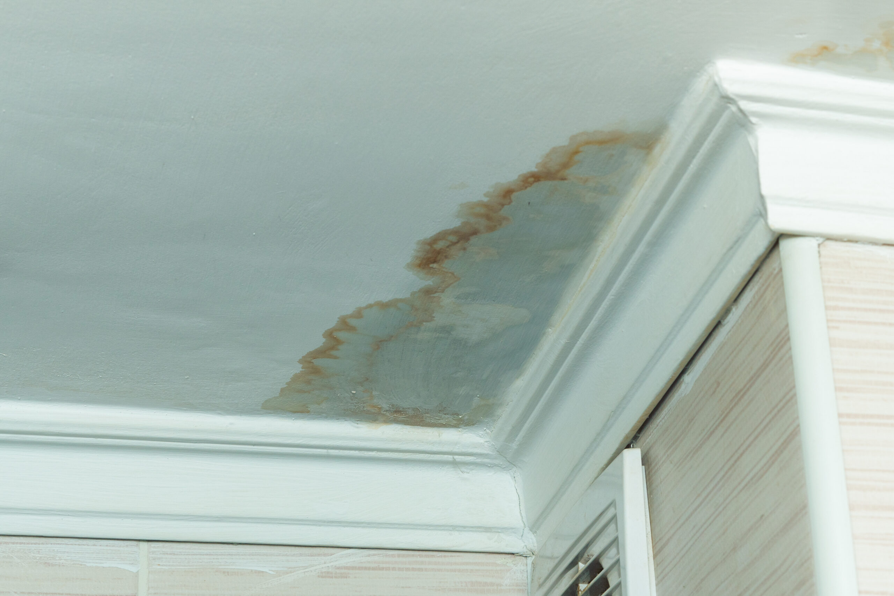

We provide fast, professional restoration services that help property owners remove water, dry affected areas, and prevent mold from developing after flooding or water damage. Taking the right steps early can protect your home, reduce repair costs, and keep indoor air safe for everyone inside.
After a flood or major leak, moisture can linger in places you can’t see. Walls, flooring, insulation, and structural materials absorb water quickly, creating the perfect environment for mold growth. Mold can begin forming within 24 to 48 hours if moisture is not properly removed. Knowing how to prevent mold after a flood or water damage event allows you to act quickly and stop a small problem from becoming a costly restoration project.
The first priority after any flood or leak is removing water as quickly as possible. Standing water allows moisture to penetrate deeper into floors, drywall, and furniture, increasing the risk of mold growth.
If it is safe to do so, begin removing excess water using mops, towels, or wet vacuums. Opening windows and increasing airflow may help reduce moisture temporarily. However, basic household methods cannot remove moisture trapped behind walls or beneath flooring.
Professional water extraction services use high-powered pumps and vacuums to remove large volumes of water quickly, which is critical for reducing mold risk and protecting structural materials.
Once visible water has been removed, the drying process must begin immediately. Even if surfaces appear dry, moisture can remain hidden inside walls, ceilings, and subfloors.
Industrial air movers and dehumidifiers are essential for removing this hidden moisture. These machines increase air circulation and draw moisture out of materials that would otherwise take weeks to dry naturally.
The structural drying process typically takes several days, depending on the amount of water and the materials affected. Monitoring moisture levels during this time ensures the property is drying properly and mold cannot develop.
Some materials absorb water so deeply that they cannot be fully dried or restored. Wet insulation, saturated drywall, and heavily damaged carpeting often need to be removed to prevent mold growth.
Porous materials trap moisture inside their structure, allowing mold spores to multiply even after surfaces appear dry. Removing these materials early can prevent contamination from spreading to other areas of the property.
Professional restoration teams evaluate which materials can be salvaged and which must be replaced during the flood damage cleanup process.
Proper airflow plays a major role in preventing mold after water damage. Stagnant air allows moisture to remain trapped in rooms and enclosed spaces.
Opening windows when weather permits and using fans can help improve circulation. Bathrooms, kitchens, laundry rooms, and basements should receive extra attention because these areas often retain humidity longer than other parts of the home.
HVAC systems may also need inspection if floodwater reached ductwork. Moisture inside ventilation systems can spread mold spores throughout the property if not addressed.
Floodwater may carry bacteria, dirt, and contaminants that remain on surfaces after water removal. Cleaning and disinfecting affected areas reduces the risk of microbial growth and improves indoor safety.
Hard surfaces such as tile, metal, and sealed countertops can often be cleaned and sanitized. However, soft materials like upholstery, rugs, and mattresses may require professional cleaning or replacement depending on the level of contamination.
Professional water damage restoration services use specialized antimicrobial treatments designed to reduce mold growth and sanitize affected areas.
Even after cleanup, it is important to watch for signs that mold may be developing. Early detection allows problems to be addressed before they spread further.
Common warning signs include:
If any of these signs appear after a flood or water damage event, a professional inspection should be scheduled immediately.
Humidity plays a major role in mold growth. Keeping indoor humidity below 60 percent helps prevent mold spores from settling and multiplying.
Dehumidifiers can help maintain proper humidity levels during and after restoration. Monitoring humidity in basements, crawlspaces, and poorly ventilated rooms is especially important.
Maintaining balanced indoor humidity not only prevents mold but also protects wood flooring, furniture, and other moisture-sensitive materials.
Flood damage often extends far beyond what is visible. Moisture hidden inside structural components can remain for weeks without specialized equipment and professional inspection.
Professional restoration teams use moisture meters, thermal imaging, and advanced drying equipment to locate and remove hidden moisture. Their experience allows them to address both immediate water damage and long-term mold prevention.
Fast professional response can dramatically reduce the chances of needing mold remediation services later.
Taking action quickly after flooding is the best way to prevent mold and protect your property. Proper water removal, structural drying, cleaning, and humidity control all play important roles in stopping mold before it starts.
Delays allow moisture to remain trapped in building materials, increasing the likelihood of mold contamination and structural damage.
If you’re looking for reliable help to prevent mold after flooding or water damage, S.W.A.T. Restoration is ready to respond. Our team provides fast water extraction, professional water damage restoration, and complete drying services designed to protect your home or business. We locate hidden moisture, remove damaged materials, and restore affected areas so you can move forward with confidence.
When water damage strikes, acting quickly can make all the difference. Contact S.W.A.T. Restoration today for expert restoration services and dependable results.